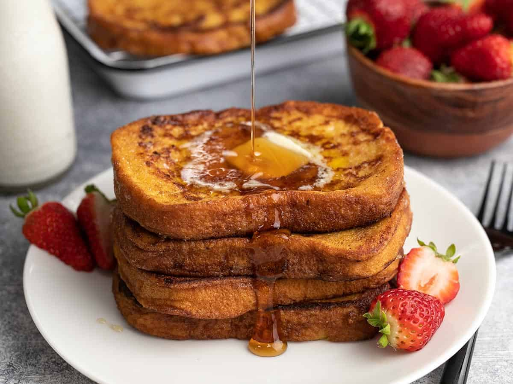

French Toast

Description
French Toast is a sweet and easy to make breakfast to start the day on a high note.
With only 7 ingredients and about 15 minutes, you can have a restaurant-quality
breakfast to start your day.
Note: The recipe will work better with thicker slices to
hold the batter we soak it in.
Ingredients
2/3 cup milk
2 large eggs
1 teaspoon vanilla extract
1/4 teaspoon ground cinnamon
salt (to taste)
6 thick slices of bread
unsalted butter
Steps
- Get a shallow mixing bowl, and add in your milk, eggs, vanilla, cinnamon, and salt
(a pinch should do). Whisk all the ingredients together.
- Start heating your skillet on medium-high heat. Lightly coat it with the
unsalted butter.
- Dunk your bread into the egg mixture. Soak both sides.
- Transfer the slice to the skillet, and cook for about 3-4 minutes per side.
- Serve hot. Feel free to add syrup, fruit, powdered sugar, more butter, whatever
you like!